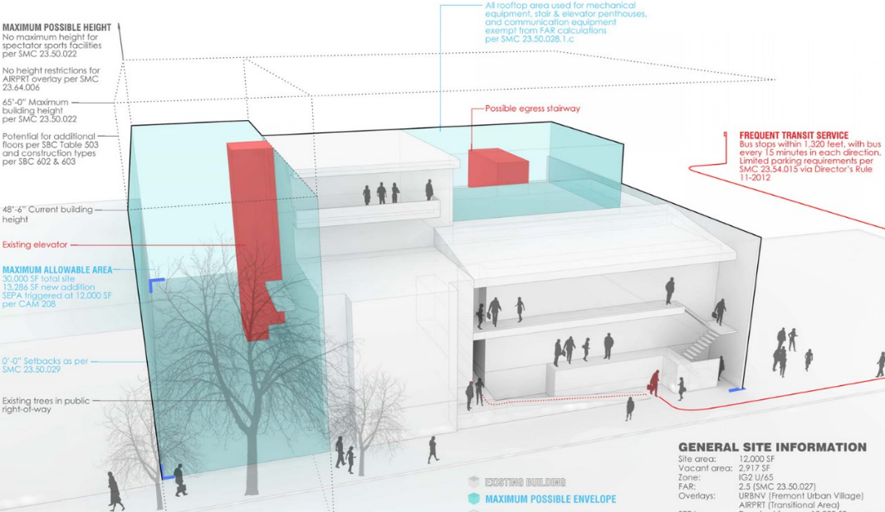
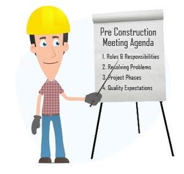

This is the first step in the process of constructing a building. This includes the following:
a. Hiring of architect, contractors and civil engineers
It is important to hire proper architects, contractors and civil engineers for your project. The hiring should be done based on qualifications, knowledge and previous construction experience but not on prices.
b. Identification of location
Finding the correct location for your construction is the most important decision as you need to ensure that your customers will have access to transport, shopping malls, schools etc. If correct location is not chosen, it may lead to losses. Thus, the owner, architect and the contractors should decide the feasibility of the location based on factors like site access, building orientation, utility connections etc.
It is very important to do environment testing to find out whether there are any contaminants in the soil of the location we are interested in to start the project. Avoid buying any type of contaminated property as removing the contaminants can be very expensive.

Hire a competent surveyor to produce a boundary survey and elevation certificate to the property. Make sure that the property is not being built in the easements.
After completion of land surveying, planning and environmental testing, make sure that you buy the right land for the project.

Most architects are seeking contractor’s involvement in the design process. This not only provides the owner and the architect with useful information related to current market pricing but also helps them take quick decisions about the construction.
This involves the following important steps:
a. Schematic Design
Schematic designs are sketches to identify spaces, shapes and patterns. Materials, sizes, colors and textures must be considered in the sketches. Also, research must be done on what materials and equipment will be used as well as their costs.
b. Contract Documents
Contract drawings are the final drawings and specifications of the construction project. They are used by contractors to determine their bid whereas builders use them for the construction process. Contract documents establish the costs and the timeline for each stage of the construction project.

This stage involves preparing the required list of materials and sending it to different contractors and vendors for quotes.
This stage begins when the owner gives a notice to proceed to the contractor that they have chosen through the bidding process.
The main steps involved in this stage are:
a. Hire Project Manager, Contract Administrator, Superintendent and Field engineers
Project Manager- The project manager is a person who is in-charge of the project team.
Contract Administrator- The contract administrator assists the project manager and the superintendent with the contract documents.
Superintendent- The superintendent’s job is to ensure the project is on schedule and every part of the project is going as planned.
Field Engineer- This is an entry-level position and mostly responsible for paperwork.
b. Assign work to the project team
The project team consisting of project manager, contract administrator, superintendent and field engineers is assigned work according to the project plan.
This is the stage in which the labor, materials and equipment needed to complete the construction project are acquired. If the company does not do this on their own, they hire sub-contractors.
Subcontractors are contractors who specialize in one aspect of the construction work such as concrete, melding, glass, Subcontractors are hired the same way a general contractor would be, which is through the bidding.
The construction phase consists of the following steps:
a. Construction Meeting
This meeting is brought together by the superintendent and the project manager to make decisions about working hours, material storage, quality control and site access.
b. Major Construction Milestones
This step includes adhering to the major construction milestones so that the project gets completed on time.
c. Inspections
Each step of construction phase is inspected by the appropriate state construction inspectors as well as the project manager. The foundation, framing, plumbing, electrical and other construction inspections are completed once each part of the building is completed.

When the construction has been completed, following steps need to be completed before the building is given to customers for occupancy:
a. Project Punch-Out
It means that the project must look out for any issues like replacing a cracked tile or changing paint color before it is considered finished.
b. Architect Approval
The architect for the project inspects the building and issues it a certificate of substantial completion if it meets every requirement.
c. Certificate of Occupancy
Once the construction work is completed, the contractor must get a Certificate of Occupancy from the Municipality from where he got the permit.